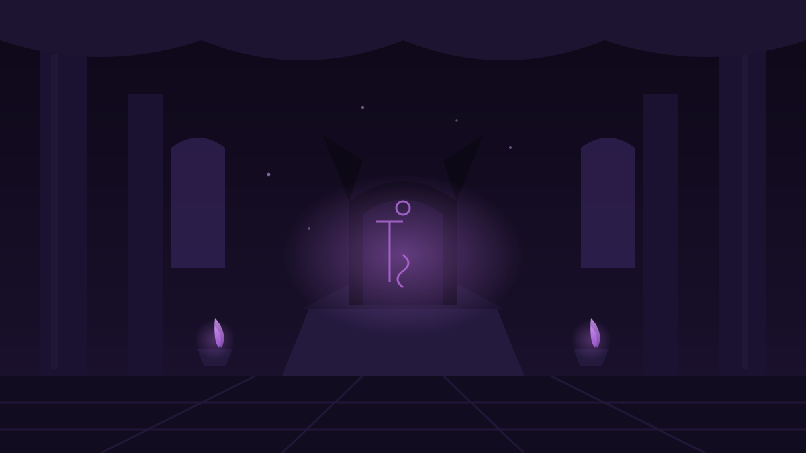

A WESTERN FANTASY TEXT RPG
符文王座
— 暗 影 觉 醒 —
自由行走于艾尔多兰 —— 你的每一步，都由文字记下。
🜛 世界设定集
世界观 · 艾尔多兰王国
一千年前，暗影君主莫格拉斯率影裔军团席卷大陆。七位先王以性命铸成七枚守护符文，将其封印于影渊之下。千年后符文之力衰微——井水泛黑、乌鸦成群、大地深处传来低语。封印的裂缝，正在扩大。
玩法 · 文字RPG
- 自由移动——用指令栏的方位按钮在世界地图上行走（北/南/西/东/上下楼），来去自如。每一步与每一场遭遇，都会写进上方的冒险日志。
- 行囊 / 技能 / 角色——随时点顶栏按钮（或按 B / K / C）打开面板。药水在行囊里使用（会自动救醒昏厥的同伴）；装备在行囊里穿上，在角色面板查看与卸下。
- 装备——三个装备位：武器（攻击）、防具（减伤）、饰品（生命上限/会心等）。渡鸦有售；狼群、山匪与女王的赏赐也会留下好东西。
- 战斗——回合制遭遇战：每回合先看敌人意图（重击/淬毒/凝盾/锁链……），再决定出手、防御或用药；多个敌人需要选择目标，有的敌人有护甲（魔法无视）、护盾或雾遁（物理无效）。击败敌人可得经验，升级时自选一项强化。
- 同伴——艾莉娅、索恩与卡雅是独立战斗单位，各有生命与斗气（随等级成长），按「态势」（均衡/强攻/守护，战斗中可切换）自动施展技能；生命归零会昏厥，可用药剂救醒，休息点全队恢复。
- 交谈与调查——每个地点都可以与NPC交谈、调查、休息。留心对话与传闻，它们是圣殿谜题与城中美局的钥匙。
- 部分选项需持有特定物品/声望/线索才能解锁（🔒 灰显）。部分抉择会留下看不见的印记：侵蚀——每点侵蚀使攻击 +1，但每场战斗开始时失去等量生命，力量与代价并存，且会改变章节的收尾。
- 死亡——从最近的命运节点（章节要地/营地）重来；进度自动保存，标题界面可继续冒险。结局会记入图鉴。
主要人物
- 主角——你，一名年轻的流浪剑士。
- 艾莉娅·星语——半精灵符文学者，银发绿瞳，通晓古语。
- 索恩·铁须——矮人守殿战士，圣殿最后的守殿人。
- 卡雅——潮歌湾的渔家猎手，鱼叉与潮路的行家。
- 塞德里克——老贤者，你的引路人。
- 莉安娜女王——白石城的年轻统治者。
- 渡鸦——兜帽下的神秘行商。
- 巴洛克——白石城权臣，笑面藏刀。
- 莫格拉斯——暗影君主。"王座本该属于最强者。"
章节规划 · 七印之路
- 序章 · 风雨之夜 —— 已收录
- 第一部 · 晨曦之印 —— 已收录
- 第二部 · 星辰之印 —— 已收录
- 第三部 · 海洋之印（潮歌湾） —— 已收录
- 第四部 · 丰收之印（金穗平原） —— 已收录
- 第五部 · 战争之印（战痕古战场） —— 已收录
- 第六部 · 暮钟之印（暮色修道院） —— 已收录
- 终部 · 深渊之印（影渊决战） —— 已收录：五种最终结局待你亲手裁定
终局之路
- 战争之印——沉眠在战痕古战场的主旗杆心里。碑林的碑文记着开阵的次序；影蚀的工兵在古战场挖的不是印，是通往影渊的地底暗渠。
- 暮钟之印——悬在暮色修道院的钟楼顶层。三口钟的次序写在圣咏书里；老修士安瑟姆的「遗嘱课」，会改变王座前的那场对话。
- 影渊——独石桥正面强攻、崖壁暗渠潜入、或托渡鸦请白石城援军佯攻——三条路通向同一座王座，五种结局等你裁定。